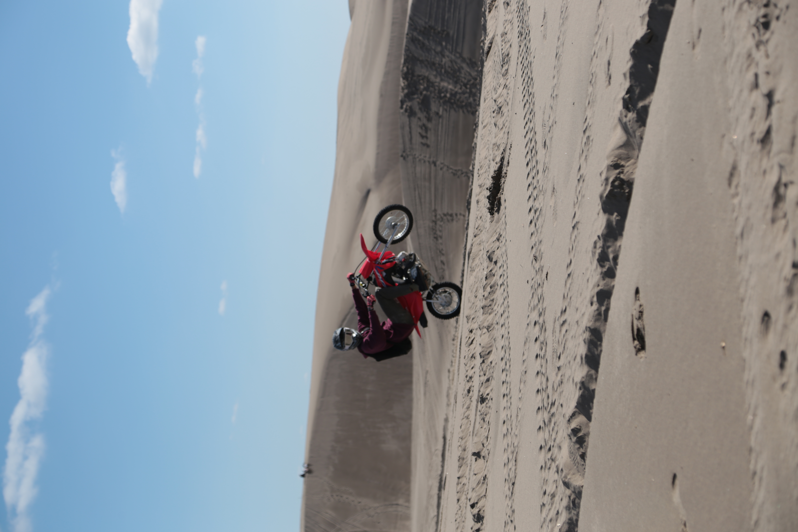

Portraits
Capturing the world, one moment at a time. Whether it's the glint of sunlight on a dewdrop, the laughter of a child, or the grandeur of a wedding day, photography is more than just taking pictures—it's about preserving memories, emotions, and stories. What We Offer: Portrait Photography: From professional headshots to family portraits, let us help you showcase your personality and style. Event Coverage: Weddings, graduations, corporate events—we’re there to capture the moments you’ll want to relive forever. Nature and Landscape: Celebrate the beauty of the world around us with breathtaking scenery. Custom Shoots: Have a creative vision? Let’s bring it to life together! To me, it means creating something timeless, something that people can look back on and see themselves, their emotions, and even their dreams in that moment. It’s not just about the technical side—like lighting, composition, and focus—but also about trust and empathy. You’re building a relationship, however brief, to make your subject feel comfortable and understood. It’s powerful to know that a portrait can boost someone’s confidence, memorialize a milestone, or even serve as a treasured family keepsake. For me, it’s a privilege to preserve someone’s story, a part of their legacy, and to show them the beauty others see in them—often, a beauty they might not recognize in themselves.
Landscape
Landscape photography is a form of storytelling through the natural world. For me, it’s about capturing the grandeur, serenity, or drama of a scene and sharing the awe it inspires. When I photograph landscapes, I feel connected to something bigger than myself—a sense of wonder that transcends words. It’s a way to pause and appreciate the beauty, power, and intricacies of nature that we often overlook in our busy lives. What I love about landscape photography is the patience and mindfulness it requires. It’s not just about being in the right place but also waiting for the perfect light, weather, or moment. The process teaches me to slow down, observe, and truly experience my surroundings. Each photograph becomes a reflection of my perspective and emotions in that moment, turning a simple view into an intentional work of art. To me, landscape photography is more than just capturing pretty pictures—it’s about preserving a sense of place. It’s a way to honor the environment and invite others to see the world’s beauty through my lens. It can inspire a connection to nature and perhaps even a sense of responsibility to protect it.

Why Choose Us? At Emma's Photos, we believe in creating images that feel timeless and authentic. With an eye for detail and a passion for storytelling, we bring a unique perspective to every project. Let’s Create Together Photography isn’t just about what you see; it’s about how it makes you feel. Reach out today to book your session, ask questions, or learn more about how we can help turn fleeting moments into lasting memories.